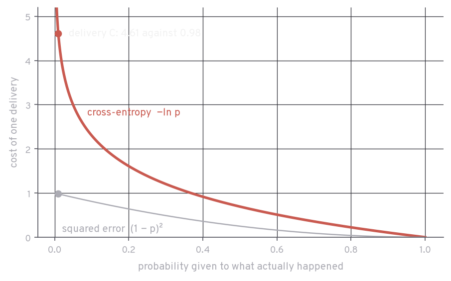

Day 2 of 140 · Phase 1: Learning from data
Classifying: the logistic curve and cross-entropy
For a yes-or-no question, the model outputs a probability through an S-shaped curve; cross-entropy, −ln of the probability given to the right answer, punishes a confident wrong answer without limit.
1Notions
The case: will a delivery arrive late, yes or no? On Day 1 the model predicted a number of minutes. Here it must predict a probability, a number between 0 and 1, and the loss must say how good that probability was.
From a score to a probability: the S-curve
The model first computes a score, as on Day 1: z = b + w × distance. The score can be any number. The logistic curve (the sigmoid) squeezes it between 0 and 1: p = 1 / (1 + e^(−z)). A score of 0 gives 0.5; a large positive score gives almost 1; a large negative score, almost 0.
z = −3 + 0.5 × distance (made-up weights): the longer the delivery, the higher the score, the closer the probability of being late gets to 1, without ever reaching it.Cross-entropy: the cost of a probability
A delivery's cost is −ln(p given to what actually happened). If it arrived late, we take the probability of late; if it arrived on time, the probability of on time, 1 − p. The loss is the mean of the costs.
| Delivery | Actual | p (late) | p given to actual | Cross-entropy | Squared error |
|---|---|---|---|---|---|
| A | late | 0.9 | 0.9 | 0.11 | 0.01 |
| B | late | 0.4 | 0.4 | 0.92 | 0.36 |
| C | late | 0.01 | 0.01 | 4.61 | 0.98 |
| D | on time | 0.2 | 0.8 | 0.22 | 0.04 |
| Mean | 1.46 | 0.35 |
Delivery C was late, and the model was 99% sure it would not be. Cross-entropy charges it 4.61, more than three times all the other deliveries put together. The squared error (1 − p)² charges it 0.98: it can never go above 1, however sure and wrong the model is.
Why not the squared error
Two reasons, both visible on delivery C.
- A ceiling. At p = 0.001, cross-entropy costs 6.91, at p = 0.0001 it costs 9.21: no limit. The squared error stays stuck under 1, so a disastrous prediction costs barely more than a mediocre one.
- A flat slope. Through the S-curve, the slope of cross-entropy with respect to the score is simply
p − y(y = 1 if late, 0 if on time): −0.99 for C. The slope of the squared error is2 × (p − y) × p × (1 − p): −0.0196, fifty times weaker. Gradient descent, from Day 1, would barely move the model exactly where it is most wrong.
The recipe
for each delivery:
z ← b + w × distance
p ← 1 / (1 + e^(−z)) # probability of late
cost ← −ln(p) if late
−ln(1 − p) if on time
loss ← mean(costs)
slope ← mean((p − y) × distance) # then a Day 1 step on w
The same loss comes back in Phase 3: a language model is a classifier that picks the next token among thousands, and it is trained with −ln of the probability given to the right one.
To watch
StatQuest, Logistic Regression, from 3:00 to 6:10: the S-curve and what its y-axis means. Then Neural Networks Part 6: Cross Entropy, from 0:00 to 8:40. What to look for: the chart where the squared residual flattens near 1 while cross-entropy keeps climbing.
2Demo
p is the probability the model gave to what actually happened. Cross-entropy in salmon, squared error in grey. Below 0.01, off the chart, cross-entropy keeps climbing: 6.91 at 0.001.
3What I did, in my words
The S-curve takes a score z, from discrete or continuous variables, and gives the model's probability. Cross-entropy is useful because it punishes confident errors. The S-curve is tuned by its parameters: w for the steepness of the curve, and b, which moves the certainty threshold; w makes the model become sure or unsure more or less quickly. With the example of four situations, we see the difference between squared error and cross-entropy. What is also interesting, for gradient descent, is the derivative of cross-entropy or squared error with respect to the score z: it brings in the slope of the S-curve. Cross-entropy rises slowly, whereas squared error is stuck under 1, hence the poor calibration on extreme answers, and the extremely slow step of squared error on a model that is confident but wrong.

Concretely, we tested several different scores to see, with data, the difference between the two loss functions when we take the derivative with respect to the score z behind the probability. Comparing how "punitive" cross-entropy is turned out to be very interesting!
My notebook: jour-002.ipynb.
Sources
-
Video · StatQuest (Josh Starmer)
StatQuest: Logistic Regression
3:00 → 6:10
Watch from 3:00 ↗ -
Video · StatQuest (Josh Starmer)
Neural Networks Part 6: Cross Entropy
0:00 → 8:40
Watch from the start ↗
Notions and demo: the AI assistant. Notebook, figure and words: Akram, code written step by step with the AI assistant. English translation of his words: the AI assistant.